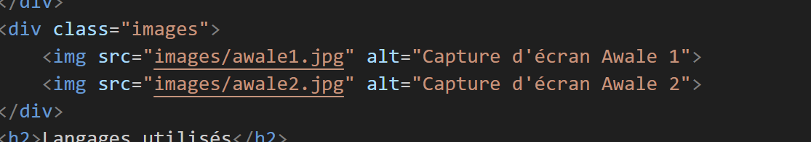

L'Awale est un jeu traditionnel africain de stratégie et de réflexion. Ce projet scolaire consistait à implémenter une version numérique du jeu en Java, permettant à deux joueurs de s'affronter sur un plateau de 12 cases.
Le jeu respecte les règles classiques : chaque joueur distribue ses graines dans les cases adverses, capturant celles de l'adversaire selon des règles précises. L'objectif est d'avoir plus de graines que l'adversaire à la fin de la partie.
Ce projet m'a permis de développer mes compétences en programmation orientée objet, en gestion d'événements utilisateur et en logique algorithmique.
